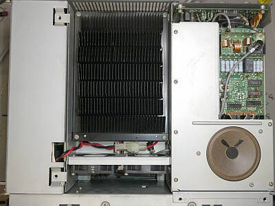
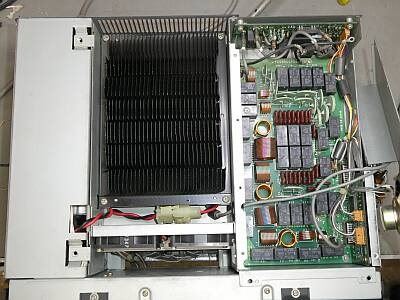
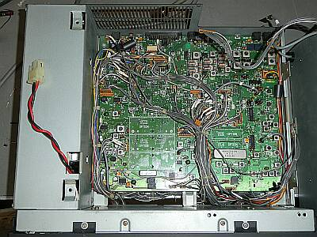
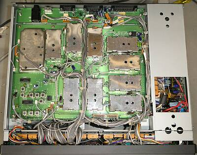
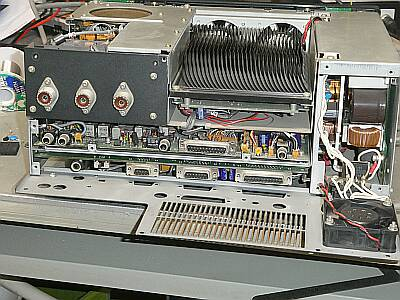
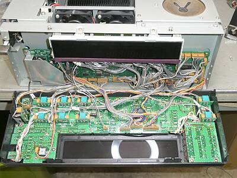
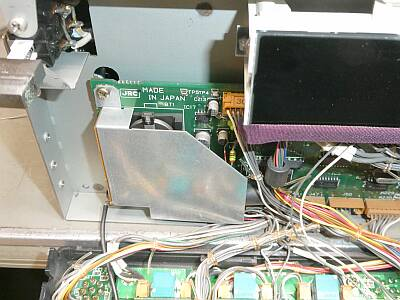
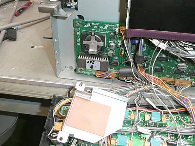
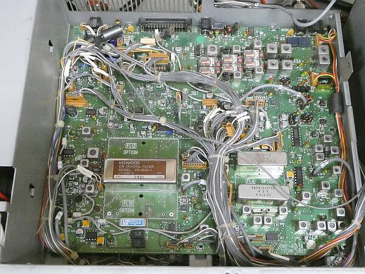

 |
上蓋（上ケース）を開いた状態です
黒いヒートシンクは、ファイナル部
内臓ファン２個で強制空冷される仕組みです
右のシールド・ケースの中は、オートアンテナ・チューナー部
左は、電源部
こちらにも強制空冷のファンが１個用意されています（リア・パネルから見えます）
ＪＳＴ-１４５Dには見えない基板がスピーカーの上にあります
センサーユニットと称されたもので、５０ＭＨｚ帯のＬＰＦも含まれています
|
 |
右のスピーカーが取り付いているシールド部をあけると、そこには、オート・アンテナ・チューナー・ユニットが置かれています
結構な面積を取っています
ＶＣをモーターで回すのではなく、固定コンデンサやコイルを切り替える・・・ＪＲＣいわく、ハイスピードで対応できる方式の採用です（プリセット機能あり）
ＪＳＴ-１４５Dの場合は、ここにＬＰＦユニットが置かれています |
 |
シャーシ上面
ファイナル部・アンテナ・チューナー部を持ち上げた下にある基板です
ＴＸ／ＲＸユニットと称されているものです
ＩＦフィルタですが、ＳＳＢ ４５５ＫＨｚと、ＢＷＣ ９．４５５ＭＨｚ２．７ＫＨｚ幅のフィルタ（ＪＳＴ-２４５には標準装備、ＪＳＴ-１４５Dではオプション）のみで、他は何も組み入れられていません
送信モニタ・ユニットも、オプションです（ＪＳＴ-１４５Dも同じ）
|
 |
底面（下蓋（下ケース）を開いた状態）です
シンセサイザー・ユニットと称されているものです
右端は、ＳＷ電源部
この景色は、ＪＳＴ-１４５Dと全く同じそうです
本シリーズですが、例えばＪＳＴ-１３５のような、ここまでのＪＲＣ製品によく見られたマザーボードにユニット基板を立てる方式ではありません |
 |
リア・パネルを外しました
電源部冷却ファンのガード交換がその目的です |
 |
フロント・パネルは、左右のビスと上側のビス各2本で止まっているだけで簡単に開けることができます
目的は、バックアップ電池の交換です |
 |
フロント・パネル向かって左端 |
 |
ＣＲ２０３２が、電池ホルダに収まっています
開放で３Ｖを少し下回っていたので、新品に交換しました |
|
ケース・外観は、日本の一般的な多湿な環境で長期間保管された状態です
ツマミのメッキ部分などは、くすみが生じてきていますし、冷却ファンの保護ガードは錆び付いていましたが、内部は綺麗です（劣化を感じません）
電気的な問題は全くなかったので、今回は見た目の向上に注力しました
くすみの出てきたツマミのメッキ部は、コンパウンドで磨く
錆びた電源冷却ファン・ガードを、新しいものに交換
など・・・
さて、最後はお決まりのスペック確認
いずれも、オリジナル・スペックは、十分に満足しています
まず受信感度
プリアンプＯＦＦ
ＳＳＢ ０．３μＶ Ｓ/Ｎ １０ｄｂ
プリアンプＯＮ
ＳＳＢ ０．１μＶ Ｓ/Ｎ １０ｄｂ（非常に高感度！）
５０．１MHｚ、１４．２５０ＭＨｚで、同じ結果でした
改めて気が付いたのですが、電源ＯＮ時のデフォルトは、プリアンプ・ＯＮになっています
送信パワーについて
各アマチュアバンドにおいて、１１０Wでほとんど変わらず（５０ＭＨｚ帯も） |
|
| 2026.03 |
 |
折角ですのでCWフィルターを追加しました
ＴＸ／ＲＸユニットです
ＰＢＴが動作するよう、９ＭＨｚ台と４５５ＫＨｚ台の６００Ｈｚ巾のものを追加しました
４５５ＫＨｚ台のものは、同等と思われるＫＥＮＷＯＯＤ製です
ファイナル・ユニットをどけて、この基板を裏返さないと作業ができません
結構、面倒です
追加したという情報は、ＤＩＰ-ＳＷの設定だけでＯＫです
|
|
今回のフィルター追加作業の動作確認のため、半年ぶりに通電しました
受信感度が大幅に低下、送信も５Ｗ位しか出ません、えぇっ・・・
送受信共に関係するところでの動作に問題が生じていました
心当たりがないので、一晩通電したまま放置して様子を見ることにしました
翌朝は、正常動作に戻っていました（予想、いえ期待が当たった！）
その後は、動作に問題はありません
時々遭遇する、極めてアナログ・ライクな事象です（しばらく通電していない素子には、エージングが必要？） |